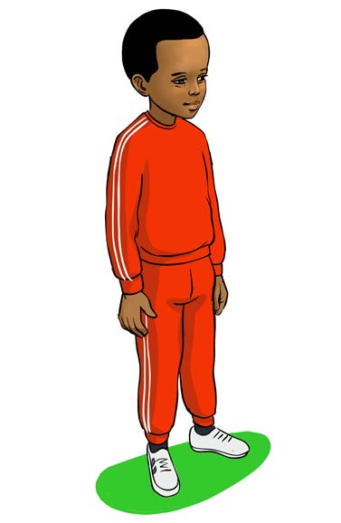
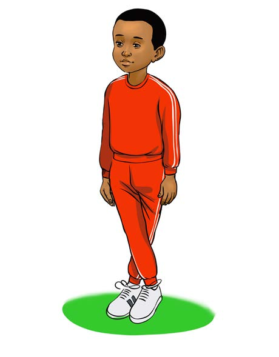

Hatua za mzabibu
Hili ni zoezi linalojenga msawazo wa mwili na husaidia uwe tayari kufanya michezo na kazi mbalimbali shuleni na nyumbani.
Hatua za kufuata:
Hatua ya kwanza
Fanya mazoezi ya kuandaa mwili.
Hatua ya pili
Simama wima kisha pishanisha miguu.


Kielelezo Na 5: Mwanafunzi akiwa amesimama wima kisha kupishanisha miguu
Hatua ya tatu
Huku miguu ikiwa imepishanishwa piga hatua 5 mbele, nyuma, kulia na kushoto.
46